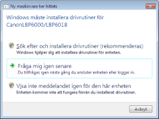
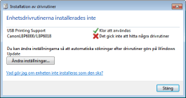
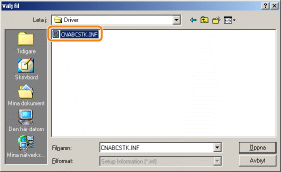
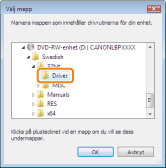
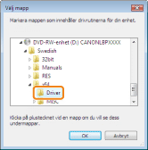
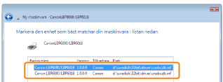

1
Anslut USB-kabeln.
2
Slå på skrivaren.

3
Starta datorn och logga sedan in till Windows som en användare med behörigheten administratör.
|
→
|
Den automatiska Plug and Play-installationsrutan visas.

|
 Om skrivardrivrutinen installeras automatiskt Om skrivardrivrutinen installeras automatisktOm du tidigare har installerat skrivardrivrutinen för den här skrivaren installeras skrivardrivrutinen automatiskt.
Om du vill uppdatera skrivardrivrutinen (eller installera den manuellt) installerar du skrivardrivrutinen efter att ha avinstallerat den tidigare.
Om följande skärm visas
Det är inte säkert att det går att installera skrivardrivrutinen på rätt sätt, även om skrivaren har identifierats med Plug and Play, på grund av begränsningar i Windows. Klicka på [Stäng] och installera sedan om skrivardrivrutinen i "Enkel installation."
|
 "
"4
Följ anvisningarna på skärmen för att installera skrivardrivrutinen.
|
OBS!
|
||
|
När du väljer filen eller mappen där skrivardrivrutinen finns.
Välj en av följande filer och mappar.
 Välj [CNABCSTK.INF] i mapparna [Swedish] - [32bit] - [Driver] på den medföljande CD-ROM.
     För 32-bitars operativsystem
Välj mapparna på den medföljande CD-ROM: [Swedish] - [32bit] - [Driver].
 För 64-bitars operativsystem
Välj mapparna på den medföljande CD-ROM: [Swedish] - [x64] - [Driver].

Om skärmen för att välja skrivardrivrutin öppnas
Valfri skrivardrivrutin kan väljas. Installationen genomförs utan problem eftersom samma skrivardrivrutin installeras.

|